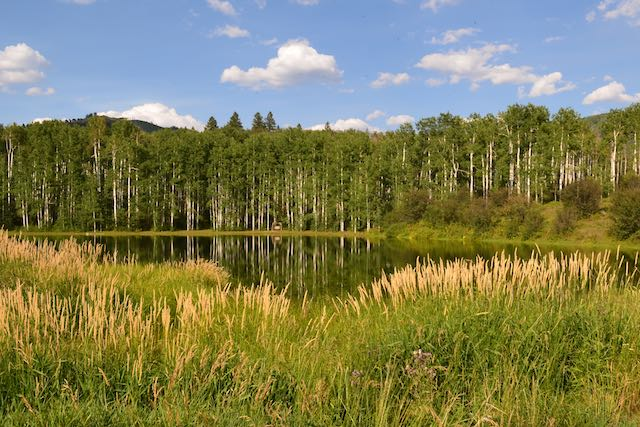
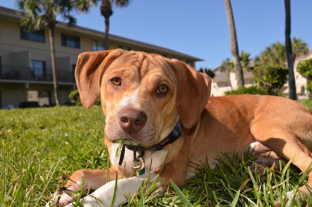
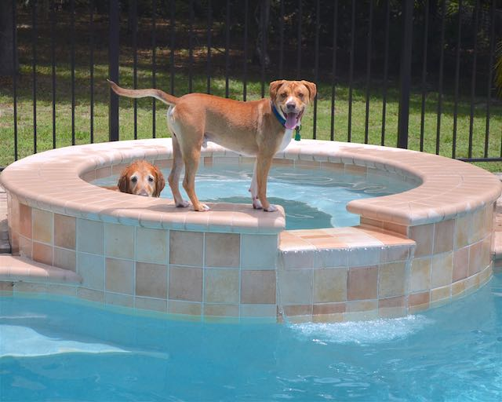
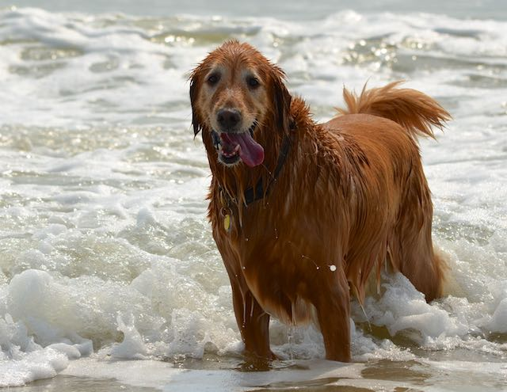

Projects
Full Stack Web Development
I started FreeCodeCamp in 2016 and really enjoyed the Front End Web Development portion (HTML, CSS, Javascript). Unfortunately, the rest of their Full Stack curriculum has been "under development" for a very long time. Their new program is available in beta version, but has not yet come online. I took a break from coding to do some renovation and woodworking projects, but have started back into web development. I am building my Full Stack skills, now focusing on more advanced Javascript plus React.js, AJAX, JSON, and server/database skills. Below are some examples of the beginner projects I did as part of the FreeCodeCamp program. I'll post more advanced examples here in the future.
FCC: Tribute Page

- One of the first FreeCodeCamp challenges was to build a basic website that is a tribute to someone. I was inspired to write mine about the stray pup we took in the year before. Hence, the Story of Mike was the result.
FCC: Survey Form

A FreeCodeCamp challenge to build an online survey form. Basic, but it works.
FCC: Pomodoro Clock

This is a simple timer for managing coding activities. There's a tradition in coding to use a kitchen timer to keep on track doing 25 minutes of coding followed by a 5-minute break. Apparently, the original timer was shaped like a tomato, and the name "Pomodoro Timer" stuck. This was a FreeCodeCamp challenge. I decided to animate the tomato a little bit to make it fun.
FCC: Quote Machine

A FreeCodeCamp quote generator. Get your wisdom for the day.
FCC: Simon Game

This FreeCodeCamp project was truly challenging at the time. Remember this game? I sure do, and it was a blast to recreate it virtually.
FCC: Wiki Viewer

This FreeCodeCamp challenge was designed to teach students how to access data on other sites through APIs (application programming interfaces). It's not all that practical since you could just go to Wikipedia yourself, but it works. :)
To see more of my coding projects, click here.
Woodworking

We have a family tradition of working with our hands. I didn't do much until I retired from the Air Force, but since then I have been enjoying making a few items here and there. I've even dabbled in some concrete work to make the table shown below.
Kitchen Island

Based on a design/plan I found on Pinterest from CherishedBliss, this kitchen island features pull-out double trash bins on the left with a hidden pullout cutting board with a slot to drop right into the bin, the right side features two full-length pull-out shallow tray/shelves, and the center houses four full-length, slow-close, deep drawers.
Cedar Ceiling

The ceilings of our front porch and rear lanai were originally finished with interior drywall and texture. The years since it was built were not kind to these materials. So I decided to create a warmer look with wood. I used 4" tongue-in-groove cedar planking stained to a rich dark brown. I added recessed lighting and installed an awesome 72" ceiling fan.
Bar Stool

Looking for a simple design and a chance to spend time in the wood shop, I found this design on Pinterest from Lazy Liz. I later built a duplicate so we now have a set of two.
Picnic Table

A joint project with my neighbor, this table is based on a photograph I found online. I used Sketchup to design it, and then my neighbor and I built it from pressure-treated pine. Situated between our two driveways, it's a handy neighborhood meetup location and a great hurricane recovery dinner table.
Concrete-top Table

We saw a concrete-top round table online and loved it, but we didn't want to spend the $3800 they were asking. So, I did some online research into working with concrete and made this table from scratch. The top is 49" in diameter. The base is solid white oak. The whole thing probably weighs 350 pounds!
Cedar Pillar Table

This weight-bearing pillar seemed like an obstruction in our backyard oasis until I added this wrap-around table using leftover cedar tongue-in-grove planks from the ceiling project. It's a perfect place for those summer beverages. At a standard bar height, it's great for standing or sitting in barstools.
Photography
I haven't spent as much time on photography as I did a few years ago. But I still enjoy catching some of those memorable shots, especially with the furry frineds.
Coulter Lake Colorado
{kind=link}
This is a real place! It's in the mountains of Colorado. It's absolutely gorgeous, and there are cabins along the lake that are available to rent. We enjoyed some awesome horseback riding the day I took this photo. Check out www.coulterlake.com.
Mike In The Grass
{kind=link}
This is Mike. The same dude in the FCC: Tribute Page above. He's a handsome fellow, indeed.
Spa Time
{kind=link}
Mike was "adopted" by our then 9-year-old golden retriever, Max, just months before we moved into our pool home. Here the two are enjoying a little soak in the spa. (It wasn't heated up at the time.)
Beach Day!
{kind=link}
Max loved water of any kind. Here he enjoys the surf at Crescent Beach in Northeast Florida.
{kind=link}
{kind=link}